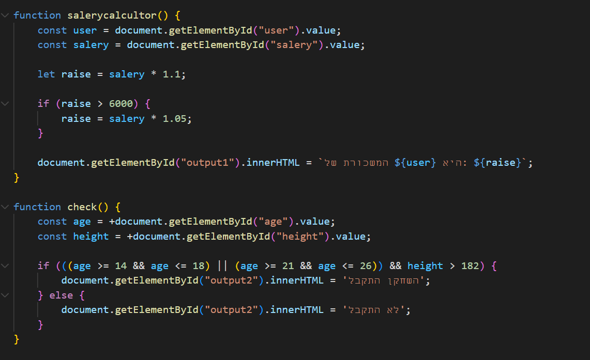

JavaScript (בעברית: ג'אווה סקריפט, בקיצור: JS) היא שפת תכנות ואחת מהטכנולוגיות הבסיסיות שיוצרות את האינטרנט, יחד עם HTML וCSS. נכון ל2023, 98.7% מהאתרים משתמשים בJavascript בצד הלקוח של האתר שלהם,[1] לעיתים קרובות תוך שימוש בספריות חיצוניות לשם כך. לכל הדפדפנים הגדולים יש מנועי הרצה להריץ קוד Javascript על המכשירים של המשתמשים.
Javascript היא שפת תכנות עילית, לעיתים מתקמפלת בדיוק בזמן, שמממשת את תקן ECMAScript.[2] יש בה טיפוסיות דינאמית, תכנות מונחה עצמים מבוסס תבניות (Prototye) ופונקציות שהן חלק טבעי מהשפה. יש בה מספר פרדיגמות, ביניהן תכנות מונחה אירועים, תכנות פונקציונאלי ותכנות אימפרטיבי. יש בה ממשקים (APIs) לעבודה עם טקסט, תאריכים, ביטויים רגולריים, מבני נתונים סטנדרטיים וDocument Object Model (DOM).
תקן ECMAScript שJavascript מממשת אינו כולל ממשקי פלט וקלט כמו ממשקי תקשורת, אחסון (אנ') או גרפיקה. בפועל, דפדפנים או סביבות הרצה שונות מספקות לJavascript ממשקים עבור יכולות אלה.
על בסיס סביבת הריצה של הדפדפנים, נבנו סביבות להרצה של ג'אווה סקריפט במחשבים אישיים ובשרתים (Node.js, Deno.js, Bun).
למרות שJava וJavascript דומות בשם ובסינטקס (אנ'), שתי השפות הן נפרדות ושונות מהותית אחת מהשנייה.